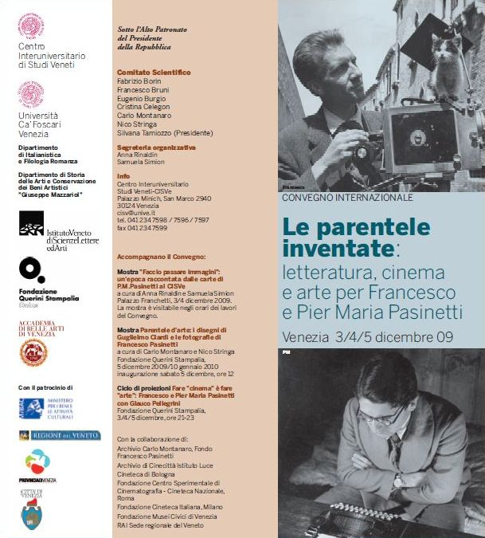
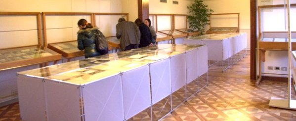

|
Brevi note sul convegno
Le parentele inventate
Venezia, 3-5 dicembre 2009

Nei giorni 3, 4 e 5 dicembre 2009 si è tenuto a Venezia il
convegno internazionale Le parentele inventate: letteratura,
cinema e arte per Francesco e Pier Maria Pasinetti, indetto
dal Centro Universitario di Studi Veneti (CISVE)
e dai Dipartimenti di Italianistica e Filologia Romanza e di Storia
delle Arti e Conservazione dei Beni Artistici "Giuseppe Mazzariol"
dell'Università Ca' Foscari di Venezia, con il supporto di
altri importanti enti quali l'Istituto Veneto di Scienze Lettere
ed Arti (vedi il sito)
e la Fondazione Querini Stampalia (vedi il sito),
che hanno ospitato i lavori nelle loro prestigiose sedi.
I lavori hanno visto la partecipazione, sia sul palco che in platea,
di studiosi, accademici, ricercatori e critici esperti di cose pasinettiane
e impegnati nel promuoverne la divulgazione; al loro rigore professionale
si è felicemente coniugato il calore umano e l'affabilità
dei rapporti interpersonali, che ha favorito piacevoli e istruttivi
scambi di opinioni e momenti di condivisione.
In attesa della pubblicazione degli Atti , che richiederà
diversi mesi, ci limitiamo a riportare qualche flash di questa intensa
ed istruttiva esperienza, che ci ha permesso di approfondire le
nostre conoscenze su P.M. Pasinetti e sullo scenario familiare e
culturale della sua vita e della sua opera.
Maria Antonietta Grignani
(Università di Pavia) ha delineato il concetto e l'importanza
dell'archivio d'autore al giorno d'oggi, quando al metodo "cartaceo"
del passato (per il quale ha parlato di "temporalità
chiusa") si va affiancando con indubbia efficacia quello informatico
consentito dalla moderna tecnologia.
Istruttiva la relazione di Anna Rinaldin
e Samuela Simion (Università di
Ca' Foscari), ordinatrici della bella mostra di materiali cartacei
e fotografici, in larga parte inediti, che arricchiva l'evento e
che conteneva documenti di famiglia, quaderni scolastici, brogliacci,
fotografie, pagine di agende e di appunti, lettere, ritagli di giornali
e le varie edizioni dei romanzi di P.M.Pasinetti.
Murtha Baca, (Università di Los
Angeles), che vanta una trentennale amicizia con P. M. Pasinetti
di cui è stata prima allieva e poi traduttrice, ha fatto
luce su una storia privata dello scrittore, quella della lunghissima
e a tratti tormentata relazione sentimentale con la nota pianista
e scrittrice svedese Käbi Laretei.
Il tema di Alessio Cotugno (Università
Ca' Foscari) è stato il carteggio tra i due fratelli Pasinetti,
testimonianza del loro ben noto fortissimo legame.
Francesco Bruni (Università Ca'
Foscari) ha affrontato l'impegnativo capitolo delle esperienze di
Pasinetti come critico e saggista e del suo decisivo contributo
alla comparatistica americana, citando il suo fecondo rapporto con
René Wellek.
Maurizio Reberschak (Università
Ca' Foscari) ha rievocato la formazione culturale dei fratelli Pasinetti,
un tema già sviluppato nel suo saggio Prove di cultura.
La formazione universitaria di Francesco e P.M. Pasinetti (1929-1935),
apparso in "Quaderni per la storia dell'università di
Padova", n. 37, a. 2000 e del quale diamo conto qui.
Tzortzis Ikonomou (Università di
Stoccolma) e Serena Fornasiero (Università
di Ca' Foscari) si sono occupati delle tracce lasciate da Pasinetti
in Svezia durante gli anni del suo soggiorno in quel Paese, un aspetto
della sua vita forse meno noto al grande pubblico.
Cesare De Michelis (docente universitario
e presidente della casa editrice Marsilio), ha rievocato
il lungo sodalizio con lo scrittore, citando piacevoli aneddoti
risalenti anche agli anni '50, quando iniziò la loro amicizia.
Ci ha strappato un sorriso la sua benevola dichiarazione circa la
scarsa propensione di Pasinetti all'umiltà, che comunque
non faceva di lui un uomo presuntuoso ma forse soltanto onestamente
consapevole delle dimensioni dei propri meriti.
Anco Marzio Mutterle (Università
di Ca' Foscari) ha ripercorso l'epistolario con Enrico Emanuelli
(1909-1967), scrittore, giornalista, inviato speciale e critico
per la pagina letteraria del Corriere della sera.
Paolo Di Stefano, giornalista, ha
illustrato il fertile rapporto di Pasinetti con la stampa citando
in particolare la sua lunga collaborazione con il Corriere della
sera anche in qualità di corrispondente dall'America,
con articoli di argomento inizialmente letterario ma in seguito,
con l'evoluzione del ruolo della Terza Pagina della quale
ha diffusamente parlato, con pezzi di costume, attualità,
politica.
Luigi Ballerini (Università di
Los Angeles) ha divertito con il suo brillante intervento sul ridere
e sorridere dei personaggi della narrativa pasinettiana,
invitando a notare come il riso appartenga più a
quelli dei romanzi ambientati prima della guerra, mentre a quelli
dei romanzi seguenti, reduci da quella esperienza disumana, riesce
tutt'al più di esprimere il sorriso, in varie sue
forme.
Monica Giachino (Università di
Ca' Foscari) ha commentato il primo e già talentuoso Pasinetti,
quello dei racconti de L'ira di Dio, Ilaria
Crotti il popolarissimo e struggente Rosso veneziano,
Ricciarda Ricorda il vasto e innovativo
Il ponte dell'Accademia e Michela Rusi
il luminoso affresco di Dorsoduro, non mancando di emozionarci
con la lettura della sua chiusa magistrale.
Massimo Ciavolella (Università
di Los Angeles) ha chiarito molti aspetti curiosi riguardanti le
traduzioni in inglese dei romanzi di Pasinetti, in particolare quella
di La confusione, evidenziando come in The Smile on
the Face of the Lion fossero stati apportati dallo stesso autore
dei tagli atti a rendere più fluida la narrazione - tagli
non riportati nella revisione uscita in Italia nel 1980 con il titolo
Il sorriso del leone e viceversa addirittura arricchita
di un intero capitolo inedito.
Gian Piero Brunetta (Università
di Padova), Fabrizio Borin (Università
di Ca' Foscari), Giulio Iacoli (Università
di Cagliari e Bologna), Chiara Augliera
(critica), Luisa Pagnacco (Università
di Ca' Foscari) e Carlo Montanaro (titolare
fra l'altro del prestigioso e omonimo Archivio costituito prevalentemente
da documenti visivi) si sono soffermati in particolare sulla figura
di Francesco Pasinetti illustrandone, sotto svariate prospettive,
i meriti di regista e primo storico del cinema italiano.
Nico Stringa e Myriam Zerbi
(Università di Ca' Foscari) hanno analizzato le illustri
ascendenze artistiche di Pier Maria e Francesco Pasinetti rievocandone
il nonno Guglielmo e la zia Emma Ciardi, noti pittori.
Silvana Tamiozzo Goldmann (Università
di Ca' Foscari) ha concluso il convegno con la sua vivace relazione
sull'autobiografia incompiuta Fate partire le immagini,
che grazie al suo instancabile e preciso lavoro di revisione vedrà
le stampe nei prossimi mesi, postuma e quindi ancora più
preziosa. A lei, competente promotrice e regista dell'evento, nonché
cordiale e generosa padrona di casa, vanno i meriti maggiori.
A margine di queste note, forzatamente sintetiche, registriamo la
sensazione abbastanza concreta che l'operazione di riscoperta e
valorizzazione di P.M. Pasinetti abbia preso la strada giusta: sono
nell'aria ulteriori appuntamenti, a cominciare dalla proiezione
dello sceneggiato televisivo tratto da Rosso veneziano
nel 1976 (regia di Marco Leto, sceneggiatura di Diego Fabbri) annunciata
per il 10 marzo 2010 presso la Casa del Cinema di Venezia (San Stae
1990). Guardando più al futuro, si vanno facendo più
solide le speranze di una ristampa dell'intero corpus pasinettiano,
anche in vista delle celebrazioni per il centenario della nascita,
che ricorrerà nel 2013.

|